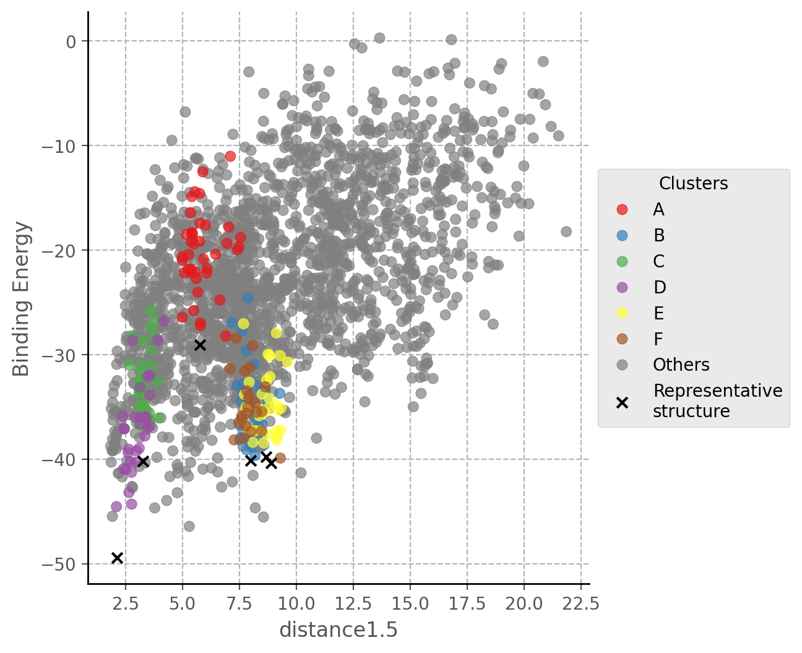

Elucidating ligand’s binding path¶
In this tutorial we will use the OutIn package to predict the binding path of an inhibitor of tyrosine kinase domain of fibroblast growth factor receptor 1 (PDB 1AGW) using an APO (PDB 1FGK) structure as a starting point.
1. Protein file¶
We will be using Schrödinger Maestro (release 2021-3) to preprocess a complex of interest from Protein Data Bank so that it can be used by PELE (Protein Energy Landscape Exploration).
In general, PELE input files need to follow a few guidelines:
The protein needs to be correctly protonated.
The ligand must be in a separate, unique chain.
Ligand residue name cannot be
UNK.We also recommend removing any solvents and crystallization artefacts.
Download the protein structures 1AGW (holo) and 1FGK (apo) by clicking on
File -> Get PDBand inputting their respective codes. Once the download is complete, you should see both structures in the entry list on the left panel.

Preprocess the holo structure. Select entry 1AGW, click on
Tasksand searchProtein Preparation Wizard. Check the following options and hitPreprocess. When prompted about multiple occupancy issues, simply select all entries andCommit.

If you do not have Prime installed, you can skip filling in missing loops and side chains, but we do recommend doing that.
Extract the ligand. Select the ligand, then click on the
Buildmenu and copy it to a new entry. It should show up in the entry list on the left.

Preprocess the apo structure. Select entry 1FGK and remove all chains except for B, you can do that by selecting each chain and using the
Delete selected atomsbutton in theBuildmenu. Preprocess remaining chain withProtein Preparation Wizardusing the same options as before.
Merge. Select the preprocessed 1FGK and ligand entries, then right click and
Mergeinto one entry. The ligand can be placed anywhere in the system, since PELE will automatically move it to the simulation box.

- Adjust ligand properties
Select the ligand, open
Buildand chooseOther edits -> Change atom properties...Set residue name to LIG and chain name to Z
Set residue number to 1
Choose
PDB atom namefrom the drop down list and selectSet unique PDB atom names within residuesClick
Applyand close the window.
Save the merged entry as
system.pdbin your working directory.
2. PELE configuration file¶
Create input.yaml file in your working directory, it should contain the following flags:
system - path to the protein-ligand PDB file
chain - ligand chain ID, here
Zresname - ligand residue name, in our case
LIGout_in - sets the defaults for the OutIn simulation
cpus - number of CPUs you want to use for the simulation (we suggest a minimum of 50 for a normal simulation, but you could lower it for training purposes only).
seed - pseudorandom numbers seed for reproducibility
iterations - number of iterations to perform. The default is 100 but since we set a distance bias we can reduce the length of the simulation
initial_site - residue corresponding to the starting point of the simulation, on the outside of the protein
final_site - end point of the simulation, where the ligand is supposed to bind
atom_dist - atom distances to track throughout the simulation
spawning - type of spawning when running an adaptive simulation, here changing to “epsilon” to apply the bias
epsilon - strength of the bias applied, needs to be between 0 and 1, where 0 corresponds to no bias applied
bias_column - column of the report (counting from 1) towards which the simulation should be biased
cluster_conditions - contact conditions to define the size of Adaptive clusters
# General settings
system: 'system.pdb'
chain: 'Z'
resname: 'LIG'
out_in: true
cpus: 50
seed: 12345
iterations: 20 # Applying a biased entrance allows us to reduce the length of the simulation
# Structural specifications
initial_site: "B:486:O"
final_site: "B:562:O" # Defines the final site near the hinge
atom_dist:
- "Z:1:H1" # Distance used to lead the entrance of the ligand to the hinge
- "B:562:O"
- "Z:1:O1"
- "B:564:H"
# Add bias towards the first distance we defined
spawning: "epsilon"
epsilon: 0.5
bias_column: 8
cluster_conditions: [0.8, 0.5, 0.0] # Apply custom cluster conditions to perform better in an open cavity like this one
We strongly recommend running a test first to ensure all your input files are valid.
Simply include test: true in your input.yaml and launch the simulation, it will only use 5 CPUs. If it finishes correctly, you can remove the test
flag and start a full production run. Otherwise, inspect the logs and correct any mistakes indicated in the error codes.
3. Launching the simulation¶
Once you have system.pdb and input.yaml in your working directory, you can launch the simulation using one of the following methods:
directly on command line using
python -m pele_platform.main input.yamlsubmit a slurm file to the queue system (ask your IT manager, if you are not sure how to do it). In our case, the slurm file is called
run.sland we can launch it on the command line usingsbatch slurm.sl
Example slurm file:
#!/bin/bash
#SBATCH -J PELE
#SBATCH --output=mpi_%j.out
#SBATCH --error=mpi_%j.err
#SBATCH --ntasks=50
#SBATCH --mem-per-cpu=1000
python -m pele_platform.main input.yaml
4. Analysis of the results¶
a. Plots¶
The plots directory contains several plots to help you get the general idea of the progress of the simulation, showing relationships between
the binding energy and solvent accessible surface area of the ligand, distance between two selected atoms or any other metric of your choice.
For example, if we open the plot called distance1.5_Binding_Energy_plot.png, we will be able to see the binding energy of each
accepted pose during the simulation with respect to the first distance that was specified in the input.yaml. The distance we
defined was between atoms H1 of the ligand and O of residue 562, hence, the hinge interaction. From the values of the plot
we can see how the ligand could have access the binding site from an outer position.

b. Top poses¶
PELE also scans all produced poses and retrieves the top 100 lowest binding energy structures to the top_poses folder. The file names indicate
the trajectory and model IDs of each structure as well as its associated binding energy. According to the previous plot, some of the structures
with low binding energy values will satisfy the hinge interaction.
We can visualize the structure with the lowest binding energy and check the pose of the ligand. We can see how the hinge interaction is preserved. On the other hand, the branch with the piperazine ring is not matching with the crystallographic pose (represented in dark grey) since PELE found an extra interaction between the final aldehyde group and the protein. However, if our goal is to reproduce the binding mode of this ligand, it is recommended to start an induced fit docking simulation from this final pose that is already inserted in the binding site.

c. Clusters¶
Although plots and top_poses give important information to known if the hinge interaction could be achieved, the data
inside clusters is usually very helpful since it shows the most important binding modes obtained through the simulation.
Inside this folder we find a representative structure of each cluster and the energetic profiles of PELE colored by the clusters
that have been obtained. Thus, it is easy to identify those clusters associated with lower binding energies that might look
more interesting.
For instance, we can see that cluster D (purple points in the plot and yellow pose in the structure) is the cluster that has the lowest binding energy and it keeps the same interaction as seen in the best pose above. Besides, black crosses locate the points that were taken as representative structures in each case.
{kind=link}